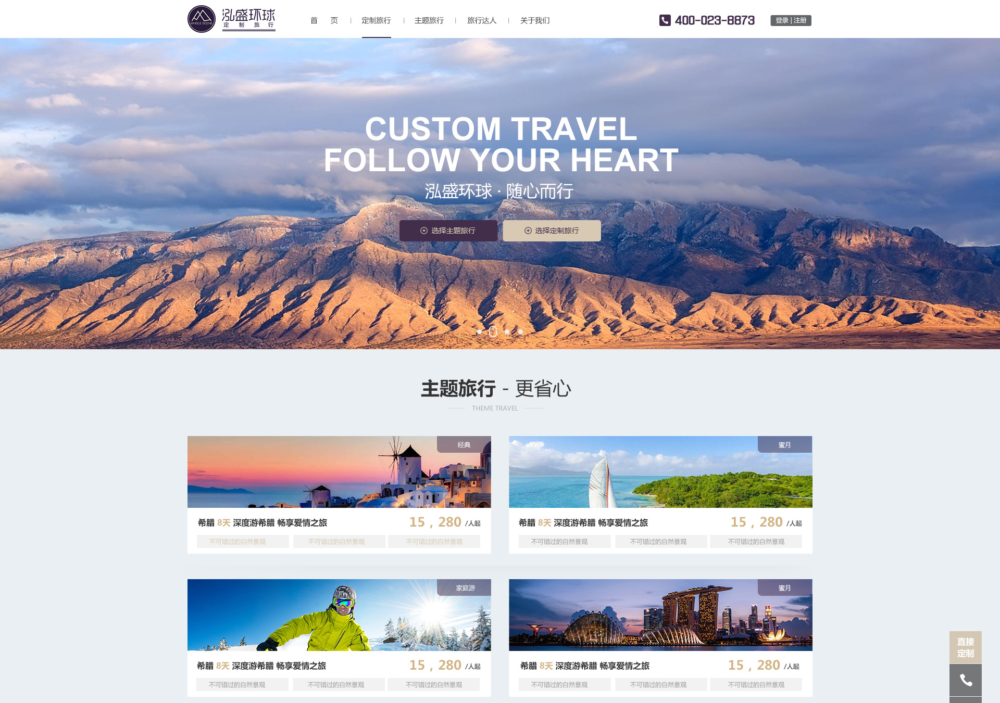
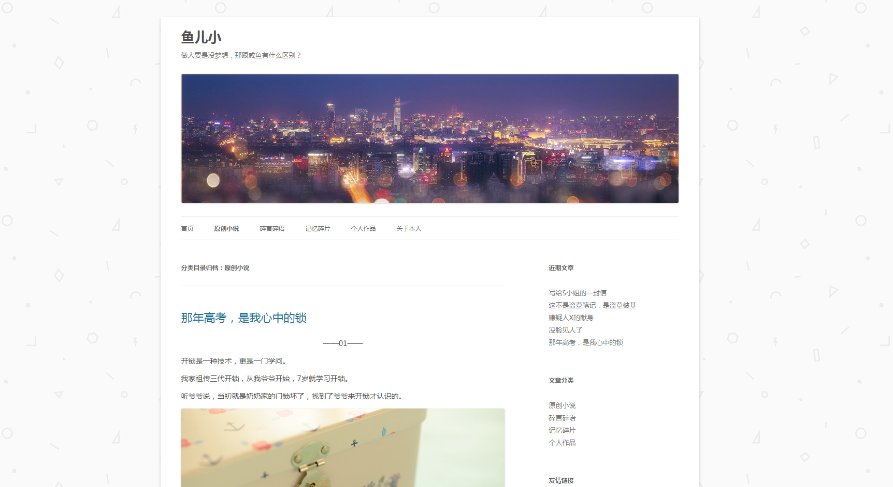
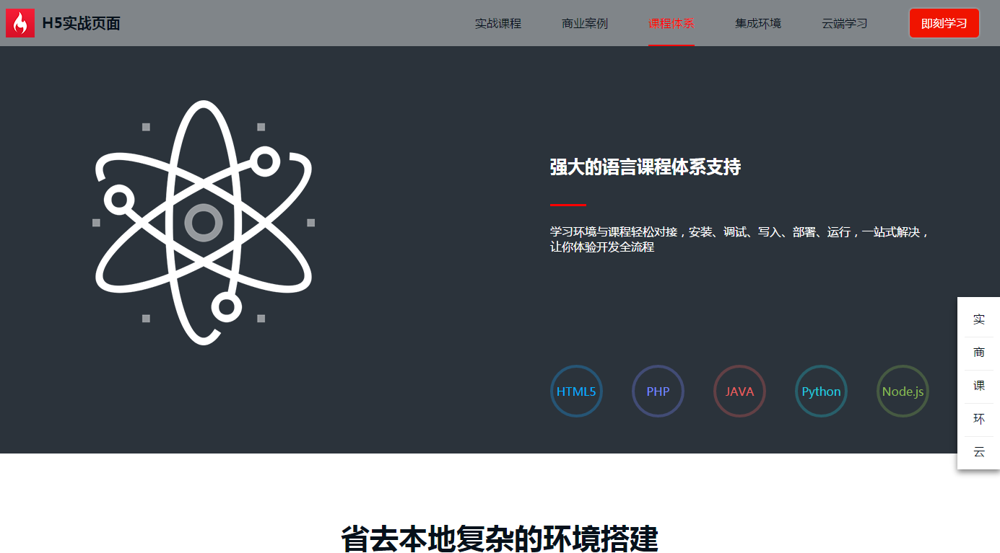

-
- Basic info. 基本信息
- 个人信息: 董卫星 / 男 / 25岁 / 本科
- Blog: www.yuerxiao.com
- GitHub: www.github.com/Zhouxingzu
-
- Experience. 项目与工作经验
泓盛环球定制旅行有限公司（2016.03 - 2017.03）
-
定制旅行官网项目
参与公司官网的前端开发工作，根据功能需求和设计图完成项目的大部分样式，完成了首页、主题旅行、旅行达人、关于等页面，其中有轮播图、表单验证、达人报名等内容。并对网站进行SEO优化，关键词“重庆定制旅行”百度排名第一。

个人项目
-
鱼儿小 个人博客（2014.10 - 至今） Demo
Wordpress主题修改，内容维护，用于记录生活趣事以及创作小故事。
 -
百度IFE前端技术学院课程（2017.03 - 2017.04） 源代码
学习百度IFE前端技术学院2017春季班课程，并独立完成其中的任务。一些demo如下：
-
轮播图插件 源代码 Demo
使用原生JS编写的一个电商头部页面，包括轮播图和侧边栏菜单。
-
web项目：静态效果页和JavaScript交互效果 源代码 Demo
使用HTML5+CSS3编写的页面，宽度自适应，兼容各种主流浏览器。用JS实现当页面滑到相应位置加载CSS3动画、导航条双向绑定、滑动门效果。

-
- Skill. 技能清单
Web前端
-
HTML / CSS
能够编写语义化的 HTML，模块化的 CSS，完成较复杂的布局
熟悉HTML5和CSS3，对浏览器兼容有一定认识
熟悉 Less / Sass / Autoprefixer 等CSS预处理和后处理方法、工具
-
JavaScript
熟悉原生Javascript，能脱离jQuery等类库编码
能运用模块化、面向对象的方式编程
了解 Vue.js 的使用
-
其他
熟悉Github版本管理，Grunt Gulp 前端自动化工具
了解前端安全、性能优化方面的一些知识
其他
-
一个有故事的人，把编程当成艺术来创作
严重强迫症，不能忍受界面一个像素的偏差，同样不能忍受代码格式一个空格的偏差